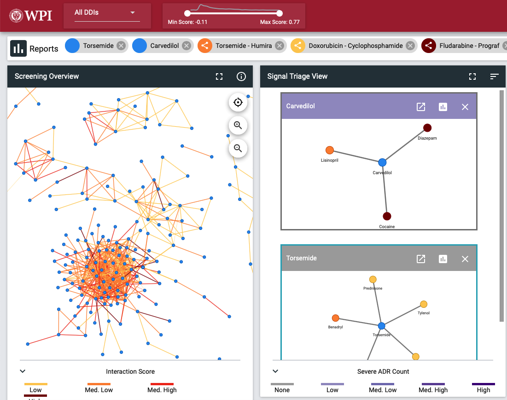
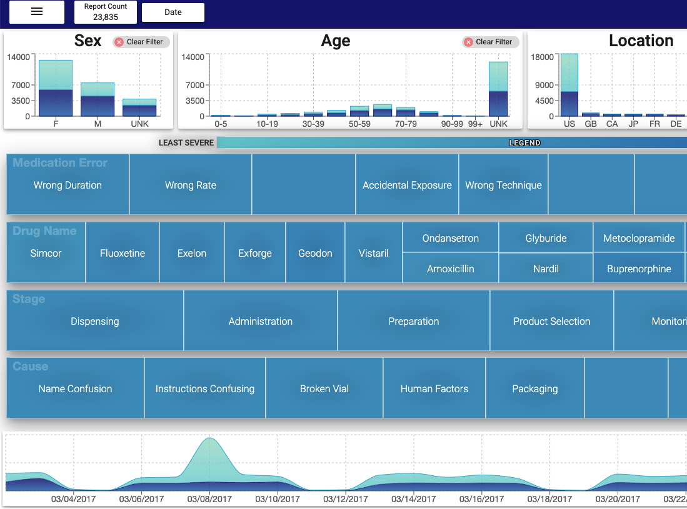
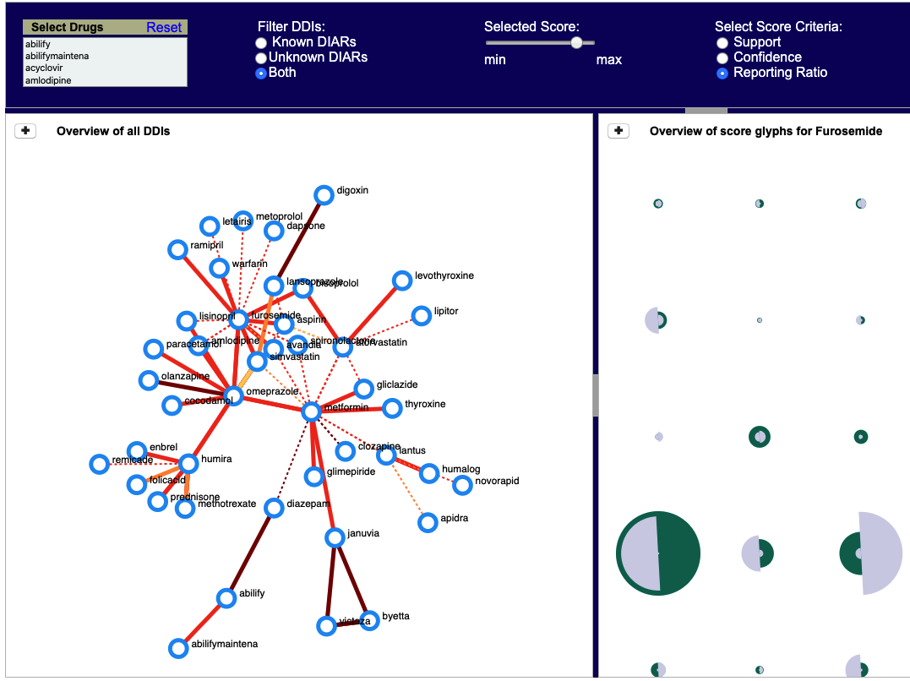
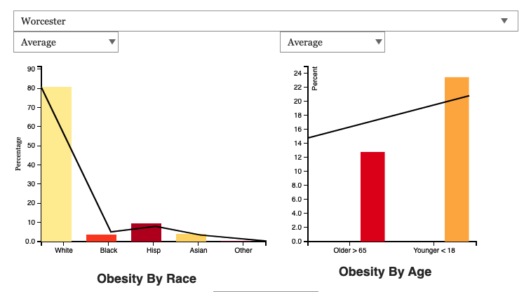

|  |
Research Project
DIVA
DIVA is a visual analytics system designed based on the workflow of the FDA analysts
to help with the screening and exploration of Drug-Drug Interaction (DDI) related adverse reactions generated via machine learning.
Keywords: React, Node-Link Diagrams, Small Multiples
Links:
Web (Edge, Safari)
Paper
Video
Code
|
|  |
Research Project
MEV
MEV is a visual analytics tool that allows analysts to visually see trends in medication error reports
and help them screen critical errors efficeintly.
Keywords: React, Treemap Visualization, Interactive Filtering
|
|  |
Research Project
MeDIAR
MeDIAR is a web-based tool that visualizes the overview of drug-drug interaction signals (DIAR) generated via association rule mining to help
understand the ranking criteria of each signal along with the associated reports.
Keywords: HTML, CSS, D3.js, jQuery, Glyphs, Node-Link Diagrams
|
|  |
Course Project
MA Obesity Analysis
This project allows to assess the factors affecting obesity to help obesity policy and program decision makers in planning and allocating federal budgets to various food assistance programs.
Keywords: HTML, CSS, D3.js, Maps, BarCharts
|